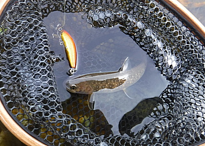
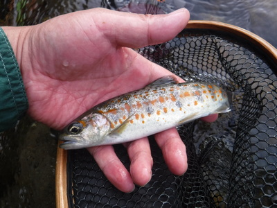
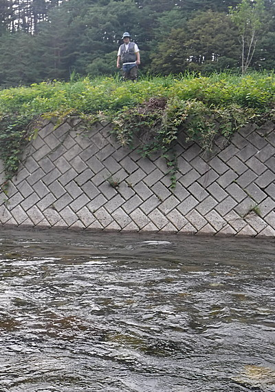
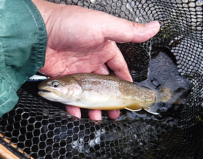
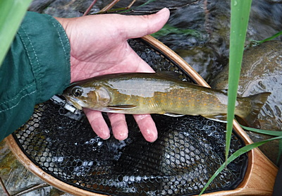

釣行日誌 故郷編
2018/08/19 松葉杖の釣り人
今朝は叔父に用事が出来て、ゆっくり９時に出発した。高速を降りて国道を30分ほど走ったところで、叔父が眠気を感じるので運転を交代して、と言ったので、替わってハンドルを握る。コンビニで昼食と入漁券を購入し、いつものバス停横の空き地へと向かう。
午後１時過ぎに着いて車を停め、いざ釣り支度にかかったところでまだお弁当を食べていないことに気づき、２人で笑いながら車中に戻ってお握りやパンをいただく。
お腹もいっぱいになり、支度も整い、さぁて釣りの開始である。刺すような真夏の日差しの中、僕は例によって少し上流に歩き、「おじさんの淵」目指して藪をかき分け小沢に沿って岸辺に降りて行く。今日のこの川は、いささか渇水気味で、状況は厳しそうだった。お決まりのドクターミノー５F赤金を結び、足音・水音を立てないよう気を付けながら淵の頭に立って、淵尻目がけてルアーを投射する。瀬から深みに向けて魅力的な動きを見せながらミノーが泳いでくるが、何も起こらない。右手から覆いかぶさっている木立に注意しながらその下に打ち込むが、その陰でも出ない。
『おかしいなぁ.......？』
いつもなら、小型なりとも１尾は居るはずのポイントなのに、今日は無反応である。早々とそこに見切りを付け、今日は珍しく釣り上がることにしてチャラ瀬を遡行してゆく。30mほど進むと、ブロック護岸に沿って、対岸に葦が密生した細長い深みがある。平坦で変化の乏しいこの川ではなかなか見込みのありそうなポイントである。流れ込みの幅はおよそ1メートルほどしかない。左側の葦に掛からないよう、集中してキャストするが、少し飛距離が短く、核心部よりもだいぶ下流に落ちた。しかし気を緩めずにリーリングをして、渕尻を引いてみる。沈黙。今度こそ！と２投目。距離は十分で流れ込みにミノーが着水したが、放物線を描いたラインが葦に掛かりそうになり、慌ててロッドを右にあおって躱す。狭窄した流れ込みから中央の深み、そして渕尻の瀬まで、良いところを通過したはずだが魚影は見えない。
『ううむ。ここでも出ないか。今日はキビシイ.......』
あと数投してから次のポイントを目指す。
今度は一面に十字型のコンクリートブロックが川底に敷き詰められたポイントに出た。相当昔に整備されたらしく、ブロックの角が転石で摩耗して丸くなっている。表面には緑色の川ごけがびっしりと付着していて、ルアーのフックが引っ掛かりそうだった。だが隣り合うブロックの間にはポケットのような深み・弛みがあるので気を抜かずに攻めてみた。が、ここでも無反応。さらに遡行を続ける。
狭い流れに両岸から木立が覆いかぶさり、緑のトンネルみたいになってきた。暗い陰を好むイワナにとっては良さそうな区間である。両岸を渡って黒いパイプが掛かっている場所までやってきた。パイプの上流側は、ほんのわずかだがチャラ瀬に深みが出来ているので、パイプに掛けないようサイドキャストで低くミノーを打ち込む。流れに乗って下ってくるミノーにアクションを付けるのは得意ではないのだが、小刻みにトゥイッチを入れてみる。それらしくヨタヨタと泳いでくるが、追尾してくる影は見えない。
『こりゃ今日は渇水でダメだ！』
その川はあきらめ、パイプの下から藪漕ぎをして斜面をへづり上がり道路へと出た。ほんの少し遡行したつもりだったが、車まではけっこうな距離があった。
大汗をかいて車に戻ってみると、まだ叔父は帰っていない。炎天下で待つのはかなわないので、再び用水路の小径から堰堤に降りて淵を攻めて見る。そこでは反応が無かったが、堰堤上の二股になった右岸側の細い流れ、葦の陰から実に可愛いイワナがミノー赤金を咥えてくれた。昼過ぎから粘った後の貴重な１尾目なので、大事にネットに取り込み、いとおしく触り、写真を撮す。小さくても１尾は１尾。ゼロと１の間には、無限とも言える差があるのだ。

何とか１尾釣って気分を良くして引き返すと、叔父が車に戻っていた。叔父が攻めた区間も激シブだったそうなので、時刻も午後３時半を回っていたこともあり、思いきって河岸を変えて別の谷に向かう。峠のワインディングロードですれ違う車は、みな遠方のナンバーで、各地からの観光客らしかった。
２番目の川に着き、最上流からめぼしいポイントを車で移動しながら拾って釣り歩く。４月に大物を釣った堰堤下のプールでは、右岸側の水面近くまで被さった小枝の下を通したときにヒットがあり、なかなかの手応えだったが惜しくも魚影を見る前にバレてしまった。
次のポイント目指して川沿いの村道をゆっくりドライブしてくると、フライマンが１人、ループを前後させているのが見えた。果たして彼は釣れているのだろうか？
毎回、ここだけは外せない、おなじみ「爆釣の淵」までやって来て、だれも車を停めてなかったので、これ幸いと駐車してロッドを取り出す。いつものように叔父が上流側、僕が真ん中あたりに立って、２人でミノーを引き回すが、どちらのロッドも曲がらない。僕はさっさと見切りを付け、下流の荒瀬を目指して歩き始める。そこは僕のお得意のポイントで、荒瀬の下の岩盤のエグレにイワナが潜んでいるのだ。
ポイントに着いて荒瀬の流れ込みに立ち、フローティングミノーを下流へ遠投する。着水した後もベイルアームを起こさずラインを送り込んでいく。はるか遠くの瀬尻付近にミノーが到達したであろう頃合いを見て、おもむろにリーリングを始める。水流に乗ってミノーはひとりで泳ぐので、たまにトゥイッチを入れてやり、イワナが追えるように極めてゆっくり上流へとリトリーブしてくる。荒瀬の流心でカツッとアタリ！ロッドが曲がる。

『やったね！』
思った通りのポイントで出たので嬉しくなって寄せてくると魚体がやけに赤っぽい。
『え？ もしかしてウグイ？』
不安におののきながらネットに入れると、今ではここらあたりでは珍しくなったアマゴ（現地名：タナビラ）である。天然のアマゴに比べると、やけに朱点が大きくて多く、朱色がオレンジがかっている。40年ほど前にここらで釣れたアマゴは、もっと小さくて鮮明な赤色の斑点が銀白色の体に散らばっていたものである。養殖され、成魚で放流されるアマゴは栄養過多でこんな体色になるのだろうか？漁協のホームページを見ると、毎年同じくらいの量のイワナとタナビラが放流されているが、僕たちに釣れてくるのはほとんどがイワナである。アマゴはすぐに釣られてしまうのだろうか？いろいろと不思議だったが、釣れて嬉しいのには変わりなく、歩み下って次のポイントを目指す。
ふと、頭上から声がして、見ると叔父が護岸の上に立っている。
「俺はここから下へ行って次のポイントを狙ってみるから、お前は下の橋までこのまま釣り下れ。」
と言う。

ここから下は叔父も僕もいつも横目で見ながら通り過ぎるだけで、１度も竿を出したことが無い。見渡すと、一面のチャラ瀬が続き、所々に石が頭を出している。左岸側は葦やら木立やらで深いブッシュが被さっている。右岸側は草むらの土手。まぁやってみるか、と、わずかな可能性に期待して、それらしいポイントにミノーを打ち込んでは釣り下がる。時刻はもう５時近く、夏のお日様も少し傾いて、夕日と言うにはまだ早かったが光線が正面から当たってくる。
叔父が去ってからすぐ、流れの中の二ツ石の間を通してくると、ブルブルッと手応え！流れに乗ってなかなかの抵抗を見せる。これはこれはと慎重にいなしつつ背中のネットを引っ張って外し、ランディングに備える。身をくねらせてネットに納まったのは、顔つきは優しいが胃の膨らんだイワナであった。ヒレの端の白さが際立っている。

こんな渇水の日に、こんな瀬から出るんだ！と感心して写真を撮り、リリースする。
次の石裏。コツン！
『また出た！』
同じくらいのサイズが懸命にファイトする。いなしてすくい、リリース。次のボサ下。カツッ！
『ヒット！』
あまり大きいサイズは出なかったが、元気なイワナたちが次々と気持ち良くロッドを曲げ続けた。体色はどれも、昔爆釣した放流魚のようでは無い。後で地図を見てわかったのだが、わずか400mほどのチャラ瀬区間で、夕方の１時間ほどで10尾以上が釣れた。
チャラ瀬が終わるあたりで出た１尾は、今日１番の大きさで、ヤマメカラーのフローティングミノーをしっかりくわえていた。コンディションも良さそうで、よくファイトした。

橋に近づき、これは！と思える深みとその下の長淵では何も起こらない。おそらくここまでのチャラ瀬区間は、これまでの僕たちと同じように他の釣り人にも評価が低く、横目で見るだけで通り過ぎていたのかもしれなかった。それか、餌やフライで攻めるには、あまりにも水深が浅く、しらみつぶしにそれらしいポイントを攻めて釣り上がらなければならないので、あまりにも労力と根気が要求され、手を出す人が少なかったのかも、と思った。
いずれにせよ、予想外に魚影は濃く、望外の釣果を得ることが出来た。５時半を過ぎた頃に叔父の車が戻って来るのが見えたので、下流の橋までは行かず、少し上流へ戻って道路側へ渡り、草むらを強引に藪漕ぎして斜面を登り、道路まで出た。車にたどり着くと、叔父が、
「どうだ、釣れたか？」
と訊ねるので
「釣れた釣れた！ 爆釣だったよ！」
嬉しさに興奮して答えた。叔父もあの区間でそんなに釣れるとは予想外だったらしく、
「そうだったかぁ」
と感心していた。なにせ久しぶりの「つ抜け」であり、12,3尾は釣ったのであった。
狂瀾の夕まづめが終わり、釣り具を仕舞い、服を着替えて車に乗り込み、集落を後にする。僕の運転で国道をひた走って街に着き、いつものファミレスで夕食となる。これから約130km、3時間の深夜ドライブに備えて熱いコーヒーをいただき、一般道をゆっくりと自宅に向かう。
途中、大きな川に赤い道路橋が架かっている場所を通る時に、叔父がいつも話してくれるエピソードがある。それはかなり昔、叔父がここを通ったときに、松葉杖をついた１人の釣り人が川から上がってきて、苦労しながらガードレールを跨ぎ越えていたというのだ。片足に怪我をして、おそらくは勤めを休む羽目になっていたであろうその釣り人は、ここぞとばかりに不自由な身で松葉杖の助けを借りて釣行に繰り出したのであろうか？
「見上げた根性だねぇ！」
「あれを見た時には笑ったなぁ！」
いつもいつも、数え切れないほど聞かされた同じ逸話であるが、そのたびに笑い、感心する２人であった。
松葉杖の釣り人は、いったいどんな釣りをしていたのだろうか.......？
釣行日誌 故郷編 目次へ
サイトマップ
ホームへ
お問い合わせ